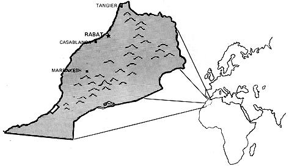
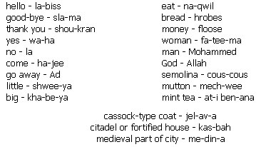
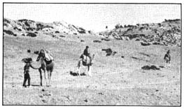

Whether you're retiring for good after a full career of nine-to-five or just getting out of the system before it gets you, why not get way out? Past the air polluting traffic, sonic booms, billboards and lingering clutter of the plastic society. Why not go some place where the cash you've saved in the land with the highest standard (and cost) of living will go much, much further?
Where? Morocco, North Africa. A penny-pinchers' paradise for the adventuresome (but not for the convenience-spoiled or timid). If you make the move, you can groove among veiled fatimas and turban-topped Mohammeds instead of living next door to insurance salesmen and week-end rioters. You won't see many cars on the streets, but donkey and horse carts make much less noise and their "pollution" can be swept up and put on the garden. Instead of a picket fence around your pad, you might have a cactus hedge surrounding semi-tropical flowers and palms.
One of Morocco's most attractive features has to be the fantastically low prices. I'll list specifics later, but to give you an idea of what it's like, the average Moroccan earns only about $350 a year. So, unless you want everything to be "just like the good old USA" a couple can get along nicely on an annual budget of $1,350.
Almost as good a reason to go is the easy living. It might take you a few days to get used to the idea that there's no need to sweat it, but pretty soon you'll find yourself really hanging loose and enjoying every day without the hectic frustrations of Western civilization. You may be bugged by busses and trains that run at random but, on the other side of the coin, if you're a month late with the rent, nobody will get shook.
I've been living in Morocco ten months and another reason I like it here is the climate. The country is much like Southern California and spring has sunny days in the 60's and 70's. Summer averages in the 80's but occasionally gets up to 130. Before you say "forget it", you should know that many summers pass without such extremes and when the temperature does shoot up, it's only for a few days. The high this past year was 105 but it was dry and more comfortable than Chicago at 90.
Fall is about the same as summer: Nothing changes color but temperatures cool a bit and the skies are still mostly clear. During the three-month rainy season, which begins in December, two-week-long rains are common but the temperature never goes below 40. Still, you'll need some warm clothes against the damp.
Morocco stretches along 620 miles of the Atlantic (western) coast of Africa and there are three mountain ranges and plenty of diversity within its borders. Ifrane, in the Middle Atlas mountains, is a snowy winter ski resort and a cooling off place in the summers. Marrakesh, to the south and on the edge of the Sahara, almost never gets any rain and averages about 70 all winter. So you can take your choice . . . or travel around and enjoy it all.
Believe it or not, the Moroccan people like Americans. They don't adore us but they've found, through the years, that we're fairly easy to get along with and usually willing to pay twice what they expect for their merchandise. The city people are always glad to see you come spend your money and the rural folks are just happy to see foreigners with strange clothes and funny habits. Moroccans may stare at you . . . but only out of good, old fashioned curiosity.
I'm no political analyst but (as of this writing, anyway) the Moroccan government has shown no sign of getting involved in the Middle East conflict. War requires money and Moroccans would rather spend theirs on health and education. Although the nation sympathizes with its fellow Arab countries, the Moroccans do not seem to share the anti-"American Imperialism" feelings so familiar in Egypt and Jordan. Unless directly attacked it seems unlikely that Morocco will enter any conflict. I feel safer here than I would in Chicago these days.
My husband and I live outside Rabat, the capital, and pay $37.20 a month for a nice three-room apartment. This is about average for comfortable living quarters in a small city or outside the center of a major one. Four room apartments average $45.00 and $60.00 a month will rent five rooms with a fireplace.
Yes, there are drawbacks. Our building-a modern-looking structure-has no elevator and no central heat. Movie houses, restaurants and stores have no central heat either and only the very newest office buildings are equipped with elevators. So we walk up and down stairs and use an Aladdin kerosene heater (it cost $19.00 new and kerosene is 100 a liter, or quart) in the winter. We also wear sweaters indoors during the rainy season. But what the heck: Elaborate heating systems aren't practical for two months of nippy weather and running up stairs is good for you. What can you expect for $37.20?
Our apartment has a few other interesting characteristics. There is gas-heated hot water in the bathroom, for instance, but none in the kitchen. This is a common situation for apartments in which the bathroom and kitchen are not side by side.
The kitchen had no shelves when we moved in (so we bought a wooden cabinet for $12.00) and no room has more than two electrical outlets. After ten months I no longer think of these things as inconveniences, however. We do hope to get a second room heater this winter but, other than that, we get along fine. Our average electricity bill is $4.00 per month and water is less than $1.00.
Many people live in villas instead of in apartments. Such houses cost disproportionally more but do offer the advantages of more living space, privacy and a yard for the children. A two bedroom villa with small dining room costs from $100 to $200 a month in the cities. They're also harder to heat.
The Spanish are not the only folks who believe in siestas. Moroccan stores open around nine in the morning, close from 12:30 to 3 or 4 in the afternoon and then reopen until 6 or 7 in the evening. I'm still not used to going out at two o'clock and finding all the shops closed. To add to the confusion, business establishments close Friday afternoon (the Holy Day), most reopen Saturday . . . and a few even open their doors on Sunday. Then, to really complicate matters, there are so many holidays from before Christmas until spring that a foreigner never knows when anything will be open.
Shopping is best done with your fatima, or local woman, who will give you her loyalty, work like a dog and treat you like her innocent children eight hours a day for $2.00. If your fatima already has a full work schedule and can't go shopping, she's bound to have a sister or cousin who is just as honest and hard working. A woman who speaks only Arabic will work for $1.00 a day but won't be nearly as helpful to you for obvious reasons.
When you shop in stores with unmarked merchandise, never pay the first price the merchant quotes. This is the cardinal rule of trade here, so obey it. If the shopkeeper speaks only Arabic and there's no one to translate for you, have him write his price on a piece of paper. Then you write half that number below it . . . after which he will mumble his woes whether you can understand him or not. Eventually he'll shake his head and mark down a figure lower than his first price . . . which means that it's time for you to agonize over an offer somewhat higher than your first figure. This can go on for hours because, in Morocco, bargaining-rather than TV-is the nation's most popular form of entertainment.
Expect prices to be lower than you'd expect them to be. Forget what you would pay for the same item (especially if it's handmade) in the states. You're not in the states and should never buy at inflated stateside prices in Morocco. If you think an item is too high, go on to the next store and compare. In fact, always shop around plenty before closing any transaction here. This may sound like a waste of time but remember: Morocco is out of the rat race. You have time here. If you try to shop in a hurry you'll only waste a lot of money and miss a lot of fun.
One of the smartest buys you can make in Morocco is a handtied wool carpet. They sell for a third of their U.S. price and a 10 X 13 rug should cost about $300.00. Of course, if you try to ship one of these carpets home you'll pay plenty for freight and customs will sock you heavily. So some of your savings will be lost. Still, if you then sold the rug in the states, you would make a profit . . . after having had use of the carpet for some time. Machine-made tapestries (3-1/2 X 6 feet, costing $7.00) and leather goods are also popular bargains.
Shopping means money and in Morocco, of course, the money is Moroccan. The basic unit is the dirham and one dirham equals 20 cents. Five dirham are the equivalent of one dollar. Each dirham is divided into 100 Moroccan francs and each franc, then, is worth one-fifth cent. So far so good.
The complicating factor here is that prices can be quoted in either dirhams or francs. I guess it is assumed that intelligent people will automatically know which unit of currency is being quoted and I'm sure the theory works for intelligent locals. Unfortunately, it sometimes leaves intelligent foreigners without the foggiest. So-to understand a given figure-you must first know if a merchant has quoted you dirhams or francs . . . or (just in case you're getting smug) millies . A mille (pronounced mill) equals a thousand francs or $2.00. There are coins of one, two, 10, 20 and 50 francs and one and five dirhams. Bills are issued for five, 10, 50 and 100 dirhams.
You cannot import or export Moroccan currency but you can take all the foreign currency you want in and out of the country. Exchanges can be made at any store or bank that displays the sign, "Cambio Exchange". NOTE: On my way to Morocco I stopped in Paris for a few days and exchanged a few too many dollars for French francs. When I again converted this money in Morocco for Moroccan currency, I found the rate of exchange to be lower than I had expected. American dollars get full value in Morocco, in other words, but if you have other currency try to exchange it while you are in the country of its origin.
As a newcomer to a country so different from the U.S., you are bound to be unaware of at least a few local customs and superstitions. One that might give you a little trouble, if you're not warned, is the fear many Moroccans share of having their picture taken. They believe that, by so capturing their image, you've also captured their soul and can then do them harm. If you want to take photos, it is always best to point to your camera first and let a possible subject know that you want to take his picture. Otherwise, you may find yourself run down and your camera snatched and destroyed in rural areas while, in the cities, the police may be called to confiscate your film.
Do not try to enter a mosque. Only true Moslems (and male Moslems, at that) are allowed in the mosques that are still in use. You can peek in a door that someone else has opened . . . but don't even look like you're about to enter.
Tipping is always confusing, and doubly so in a foreign country. In most Moroccan restaurants a 15% service charge is included on the bill . . . but you are still expected to leave a few dirhams. Luggage porters and taxi drivers get one dirham per bag or ride. Ushers (at movies and events) get 25-50 francs per person. One dirham goes to the shampoo girl at the beauty shop. Anybody who fixes anything in your apartment or helps you in any way (even though he's merely doing his job) gets one dirham. He'll let you know if he wants more and return the excess-but not be offended-if you give him too much.
Moroccans are very jealous of wives talking to other men and husbands talking to other women. When you ask for directions or information, try to ask someone of your sex.
The police have great authority and respect. Do not call them names or attempt to play jokes on them. Sentences for any disorder or violation are stiff.
Moroccans shake hands everytime they meet and say goodby. Men, women and children will all want to exchange this greeting each time they see you.
It is common to see two men or boys walking down the street holding hands or pinkies. Whatever it means, it is accepted by the culture and your ridicule will not be appreciated. You seldom see men and women hold hands (or even walk together) but when Westerners do so, the Moroccans think nothing of it.
Morocco has been ruled by and has seen a great influx of visitors from France, Spain, Germany and England in the past and the natives are accustomed to communicating with foreigners. In the larger cities, many merchants speak a little English and about half the residents of the cities and larger towns speak French. If you know any French brush up on it because Arabic is not an easy language to learn.
To complicate matters (again), spoken Moroccan Arabic is quite different from formal Arabic and also varies somewhat from, say, the Arabic spoken in Egypt . . . so it's almost impossible to study at home before you go. I have never seen a book on Moroccan Arabic for English speakers but there might be one somewhere. (There is more than one. See the information supplied by Mat Zahniser that accompanies this article-Ed.)
In any case, here are a few Moroccan words that will help you know what is going on while letting the people know you care enough to try the language. I have tried to spell the words as they are pronounced. Accent is the same on all syllables.
You can't very well learn Moroccan Arabic by yourself before you go but there are some tools to work with once you get there.
The following information on Moroccan Arabic is supplied by Mat Zahniser, currently finishing a doctoral program of Arabic studies at the Johns Hopkins University, Baltimore, Maryland.
BIBLIOGRAPHY ON MOROCCAN ARABIC
GENERAL
ENCYCLOPEDIA OF ISLAM (new edition) Vol. I pp 578-583. Excellent introduction with extensive bibliography. Any large library should have it.
GRAMMAR
ARABIC MADE EASY by Salieb-Ettabas (1959). This is about Moroccan Arabic although the title is misleading. It's methodology is not the best but the book is available in America now.
LESSONS IN COLLOQUIAL MOROCCAN ARABIC by Richard S. Hanell (2 vols.) Washington, D.C. (Center for Applied Linguistics of the Modern Language Association and the Middle East Institute-1761 N Street, N.W., Washington, D.C. 20006).
FURTHER NOTE
There has been much written on spoken Moroccan Arabic, but mostly in French. Hanell's title might be obtainable from the address listed but is in mimeograph form and has had some copyright troubles. From the same address can be obtained T.B. Irving's "North African Arabic Studies," in ARABIC DIALECT STUDIES edited by Harvey Sobelman, a selected bibliography (1962) pp. 58-88
And remember: A smile and series of hand gestures will usually get you what you want.
It's a shame so many people panic at the thought of eating the food of another culture. In this case you can rest easy . . . you can eat about the same things in Morocco that you eat in the states. However, it will mostly be fresh, not frozen; natural, rather than pumped full of preservatives. Don't worry about "strange" tastes . . . at best, you just might discover that food does taste, once you start eating it fresh and pure. Remember too that food habits are simply that: Habits. Breaking old ones and getting into new ones can be an exciting adventure.
We eat very well on $50.00 to $60.00 a month, including soft drinks, excluding liquor.
No matter where you live in Morocco, you're normally within walking distance of at least one bakery. Even the smallest vil lages seem to support several and, every morning, I buy a fresh loaf of bread for five cents from one near our apartment.
Nothing beats hot, locally-made French bread thickly spread with lots of butter. We buy a half kilo (1.1 pounds) of butter for 284 (that's hard to beat too!) that the Moroccans tell us is imported from Holland. It took us a while to get used to this u nsalted butter but we love it now.
A local butcher shop with a large refrigerator provides us with excellent meat although the prices are not exceptionally low. Ground round is 95 cents a pound, filet mignon-tender and tasty though not aged-costs $1.20 and $1.30 buys a pound of T bone steak. Lamb at 90 cents is also excellent and beef steak, which I use for brochettes and beef stroganoff (as well as steak), costs $1.00 a pound.
The meat sold in towns is inspected and stamped but in rural areas (especially those with no refrigeration facilities) you take your own chances. We've seen many shops where sides of beef or lamb were hung in the open. Pigs are raised by poor farmers but the Moroccans, like most Arabs, do not eat pork. We avoid it too, even in restaurants. Raised as it is in this climate and butchered without refrigeration, the pork is often diseased . . . and the restaurants buy their meat on the open market just like everyone else.
We buy fresh vegetables, fruit, canned goods and fish at the marche , or market. This is a large building filled with stalls operated by different merchants. Here you can pick out exactly what you want and the produce is both good and cheap the year round. My favorite buy in the winter is the famous Moroccan oranges. They're so big and sweet that I always want to lug home more than I can reasonably carry.
Potatoes, onions, peas and beans are also inexpensive and I sometimes make a huge salad of lettuce, tomatoes, cucumbers, radishes and carrots for guests. The whole thing costs me, maybe, 40 cents and I always have some left over.
The fish sold in the marche depends entirely on what the fishermen caught the day before but this usually includes almost anything you might want and it's all cheap. Sixty cents worth of tuna feeds two.
You can also buy freshly killed chickens and rabbits here but I'm timid and haven't tried that yet. Other shops sell fresh nuts, flowers, candy and wine.
Hard liquor, such as we drink in the states, is expensive but the local wine is good and cheap. Vin du Pays (literally, "wine of the country")-a dry variety in rose, red or white-costs one dollar a full bottle. Chaudsoleil , naturally less mellow, sells for even less. Domestic beer is fair and inexpensive. Imported costs little more. Cola drinks are 20 cents a quart.
A word of warning about bottles: Deposits often equal the cost of the liquid inside so be sure you return all empties. And while we're on the subject of containers, you should know that you are expected to bring your own straw basket in which to carry away your groceries. No one wastes money on paper wrappings or throw-away sacks.
Yes, it's a little different but the eating is good. I think you'll like it . . . unless your system can't adjust to eating fresh foods that are free of synthetic chemicals!
It's unbelievably expensive to ship furniture across the Atlantic and, unless you're definitely in love with your possessions, there's no reason to bother. Our fatima led us to a carpenter who made-to our specifications-a three cushion Danish modern couch, two matching chairs and a coffee table for $100. Each cushion has a zippered wool cover. A comparable used set costs $40.00 and $40.00 also buys a couch and chair with metal frames and plastic covers.
Barrel-shaped bamboo chairs are $2.80 and an armoir (wooden closet with shelves) cost us $30.00. We bought a used kitchen table and four chairs for twenty dollars and a double bed (simply a mattress supported by a metal mesh on a wooden frame) for $20.00, quite used. Fifty dollars, we found, will buy a regular double mattress set just like the ones sold in the states. All these prices are typical if you shop the dusty sheds of the medina.
There's no need to ship major appliances to Morocco either. You can rent refrigerators and stoves in the villages and cities and our refrigerator (several years old, but large) costs us $10.00 a month. We bought a new Spanish stove with three burners and a small oven for $130.00 in a French appliance store. Stoves without oven thermostats are much less expensive . . . but this complicates cooking.
Of course, the Moroccans and many of the French get along quite well without either a stove or a refrigerator. You can too by buying the food you need each day and cooking it on a $20 hot plate. As noted in MOTHER NO. 3, you can even use an aluminum foil "oven" to bake on a hot plate or you can buy a metal stove-top oven.
M oroccans usually cook over brochette pots. These are similar to the little Japanese pots sold in the U.S. as Habachi barbecues. They cost twenty cents apiece and hold enough for two. Your fatima will show you how to prepare brochettes and other Moroccan dishes so you can really go native and save even more money;
A few personal impressions of some Moroccan cities might help you decide on what part of this large and varied country you will most enjoy.
Tangier, sitting on both the Atlantic and the Mediterranean, is a melting pot. Formerly an international port ruled by Moroccan Moslems and Jews (as well as Britain, France, Spain, Italy, Belgium, Holland and Portugal) the city is now entirely Moroccan and retains many European characteristics. The French inhabit every major city in Morocco but Tangier also plays host to many Spanish and English tourists that visit while vacationing on Gibralter. It is an attractive city with excellent beaches, a casino, bullring and an interesting medina.
Rabat, the capital, has an efficient and ultra-modern section with many French stores and an American library next to the rather drab medina inside its ancient walls. A few Americans live here and many more live 20 miles north in Kenitra. There are plenty of tourist-type things to see and do in Rabat and more excellent beaches.
Casablanca was largely built by the French in 1915 and this port of a million is Morocco's industrial-commercial center. It's one of the few cities in the country with a swinging night life. Prices are somewhat higher in this town's modern shops and international restaurants and Casablanca can be called the New York City of Morocco. Again, the beaches are nice.
Marrakesh is one of the most picturesque, most Moroccan and least European of the major cities. The living is easy in this oasis of gardens on the edge of the Sahara and many hippie-types from America and all over Europe have adopted it as home.
If you choose to strike out from the cities and explore the interior of Morocco, you'll find villages that have remained virtually unchanged since the days of Christ. The cost of living in the interior is about as absolutely rock bottom as you'll find anywhere . . . but be prepared to really rough it.
Aside from typical city museums, Morocco offers many free and inexpensive attractions. Volublis, for instance, is a large city of Roman ruins dating from 40 A.D. It is about 75 miles east of Rabat and the building foundations and mosaic floors of this ancient capital will transport you back to some of the glories of ancient times.
A few miles from Volublis you'll find Moulay ldress, Morocco's holiest city, and there is an impressive view from the top of a mountain that overlooks the town.
Try to see the Royal Palace (the Mechouar) in Rabat on a Friday when the king rides his beautiful Arabian horse to mid-day prayers in the Great Mosque. There is much distinctive architecture in the entire palace area and you needn't worry about taking pictures of the buildings, the colorful Royal Guard or the king himself.
And the festivals! People-hundreds of people living together in tents for several days-hold fantasias all over the country at all times of the year. The fantasia is the charge of from four to twenty riders (usually in desert garb) on beautifully saddled horses. Many of the horses are pure bred Arabians and all the men in the fantasia are supposed to simultaneously raise their rifles and fire during the charge, then quickly stop their horses and turn around. It sounds simple . . . but it's very exciting.
All you officially need to enter Morocco is a passport and smallpox vaccination but a cholera shot is always a good idea for any travel in Europe or Africa. No visa is required unless you plan to enter Morocco, leave and then reenter. If that's the case, apply to the American Embassy (you must supply four passport-size photos of yourself) for a visa as soon as you enter the country. You'll have to wait about ten days for the visa.
Icelandic Airlines offers the least expensive air service to Morocco. In case you've never heard of Icelandic, its flights leave only from New York, they all stop over in Iceland and they land only at London and Luxembourg. From there you must make connections (most likely at Paris) to fly or take a train the rest of the way. Either way you save and round-trip turboprop fare is only $239.00. One-way is slightly over half that amount.
Economy fare on other airlines is about $248.00 one way and full fare is even more. Full fare does offer the advantage of stopovers in London, Paris, Madrid, Lisbon, Gibraltar and other places at no extra charge, however.
If you have plenty of time you might prefer to take a luxury liner from New York to Gibraltar or Algeciras, Spain for about $380.00 and make ongoing connections from there. By the time you hand out tips, the ship will prove more expensive than flying but the activity on the boat, the good food and the additional luggage space may be worth it to you.
For economy sea travel, the Yugolinija sails from New York to Casablanca every 10 days and holds 50 passengers. I don't have a price on this cargo vessel but I know the rates are lower than those charged by the luxury liners.
For connections from the Continent, try the sleeper train that runs from Paris to Casablanca in 48 hours for $50.00. You can stop along the way, if you prefer, and explore Bordeaux, Irun, Madrid, Algeciras, Tangier and Rabat. There are daily ferries across the Straits from Spain or Gibraltar and a connecting train from Tangier to Marrakesh.
Morocco is primarily an agricultural country and many industrial goods must be imported and are heavily taxed. You are well advised, then, to bring some basic household goods with you.
The worst hangup is the Moroccan current: It's 110-120 volt 50 cycle AC instead of the 60 cycle used in the U.S. Appliances with clocks and timers from the states won't work in Morocco. Hair dryers blow up instantly. Things like irons, mixers and electric ovens work with adapter plugs but may give you trouble if you try to use them again in the U.S. You'll pay through the nose for these items in Morocco, however, so either purchase 50-60 cycle appliances before you arrive or buy the equipment here and sell it when you leave.
If you bring a transistor radio you can listen to European stations that play American music and local stations that pour out plenty of Arabic sounds. Bring a portable record player if you must have your records. All electronic equipment (even European) sells at twice the U.S. price.
Dishes, glasses, pots, pans and good woolen blankets are available everywhere in Morocco but you should bring at least one set of bed linen, a week's worth of bath and kitchen towels, some silverware, hangars, can openers and other small kitchen utensils. I get a lot of use out of an oven-broiler I brought with me but it certainly isn't necessary.
There's no need to bring too many clothes. Unless you plan on spending a lot of cash, there aren't many places to dress up for. Go heavy on casual dresses, slacks and sport shirts, a warm coat and a few sweaters for the rainy season and some ultracool things for the summer. Moroccans do not approve of men or women wearing shorts on the street and such dress is really taboo in the cities. Shoes sell at reasonable prices everywhere.
If Morocco sounds good to you and you're already packing your bags, I wish you the best of luck over here with us. But a word of warning: If you expect all the comforts of home, stay home. Because that's where they are. If you're not ready to accept people with different ideas and standards then, again, stay home. The people of Morocco aren't Americans. The free and unstructured life over here isn't all sunshine and palms. There are even moments when I miss crazy things like traffic jams and grating TV commercials. But those moments, I hasten to add, are very brief ones.
Yes, living expenses are very low here in Morocco. If you have an outside income or sufficient savings you can live in comfort (some might say near-luxury) on less than $2,000 a year. And there are other rewards. I have found that, by getting so completely out of our culture, I can think more clearly about myself, the United States and the world in general and I now have time for the reading and reflecting that I'd never have done in Chicago.
At any rate, if you do come over and decide that Morocco isn't your bag, you'll be in an ideal location for moving on deeper into Africa or north to Europe. And that, to me at least, is an exciting thought in itself.
|
 Camels are a common sight near Tangiers and south of Casablanca. |
 |
 |